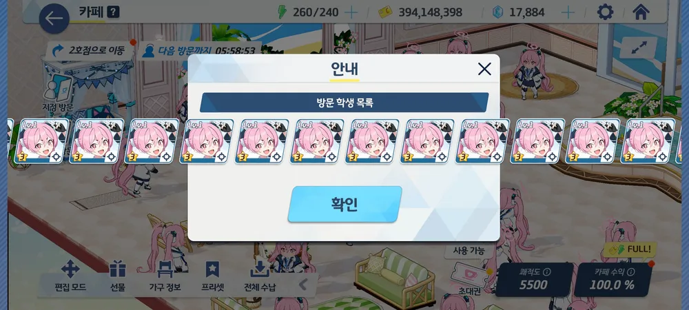
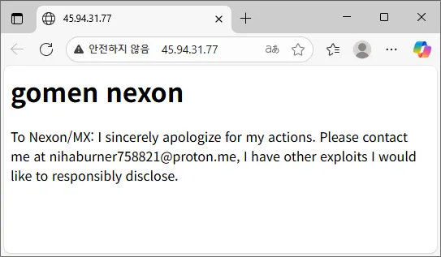

51 · 13 · 4 시간 전 · 원문


해커가 그냥 코유키 좋아 청년이었으니 망정인 블루 아카이브
수집 당시 댓글 13개
유아학교 · 11 시간 전
스피네루 · 4 시간 전
좀비파우더 · 4 시간 전
바보도알수있게 · 4 시간 전
드높은천상물반도 · 4 시간 전
해킹하고 최애자랑 한 새끼배너링크 유튭으로 바꾸기만 한 새끼미안하다고 사과한 새끼부실공사부분 알려준다고 한 새끼...저때 해킹해놓고 배너링크에만 악성프로그램 심어놨어도니케이상의 대참사였음ㅋㅋ
↳ 답글 · mkp05 · 4 시간 전
ㄹㅇ 저때 코유키 도배안하고 이번 니케처럼 악성프로그램 정상 파일인 척 잠수타고 쪽쪽 뽑아먹었으면 블아자체가 날아갔을꺼임.
프로파간디 · 4 시간 전
예방접종 해준 착한 해커 ㅠㅠ
힝입니다 · 4 시간 전
니~하하
cup · 4 시간 전
멸치의명치에펀치 · 4 시간 전
할머님사랑꾼 · 4 시간 전
이라기시따 · 4 시간 전
위상부도체 · 3 시간 전
이메일 이름도 니하버너니하하하
해킹하고 최애자랑 한 새끼
배너링크 유튭으로 바꾸기만 한 새끼
미안하다고 사과한 새끼
부실공사부분 알려준다고 한 새끼...
저때 해킹해놓고 배너링크에만 악성프로그램 심어놨어도
니케이상의 대참사였음ㅋㅋ